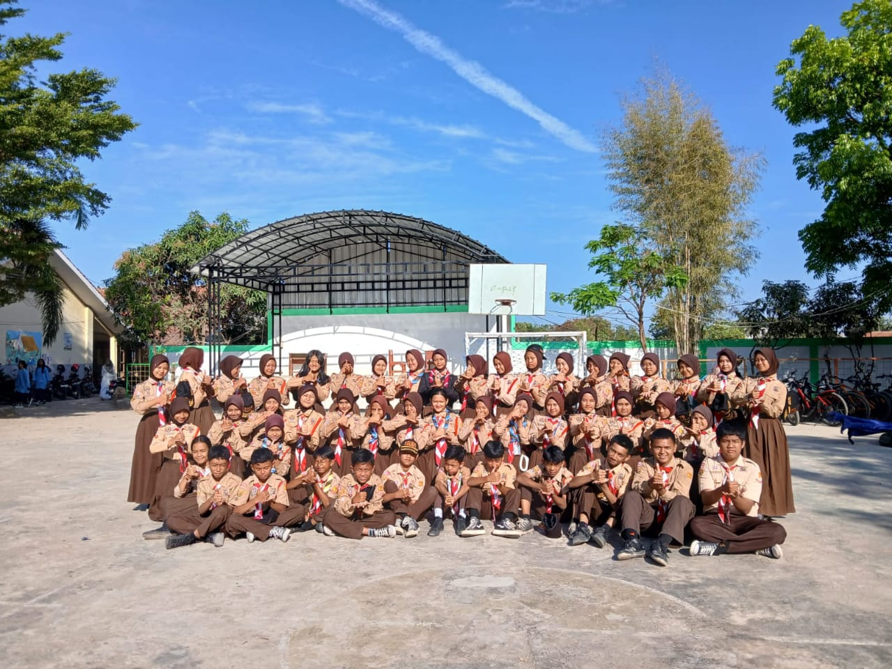

Pendidikan Saat Ini
Universitas Pendidikan Indonesia (UPI) - Sistem Telekomunikasi (Sedang Berkuliah)Saat ini sedang menempuh pendidikan di jurusan Sistem Telekomunikasi UPI, dengan fokus pada pengembangan Jaringan, Komputasi, dan teknologi informasi. Selama masa kuliah, aktif mengikuti berbagai kegiatan kampus dan hingga saat ini masih senang melakukan eksplorasi untuk penetapan tujuan kedepannya.
Pendidikan Sebelumnya
SMK Tamansiswa Rancaekek - Jurusan Teknik Komputer dan Jaringan (TKJ) (Lulus)Selama di SMK, mendalami teknologi komputer dan jaringan, dengan keahlian dalam perakitan komputer, pengelolaan jaringan, serta troubleshooting sistem. Selain itu, aktif dalam organisasi OSIS dan terlibat dalam berbagai kegiatan sekolah, seperti penyelenggaraan acara, program kepemimpinan, dan pengembangan siswa lainnya.
 SMP Negeri 4 Rancaekek (Lulus)Di SMP, selain mengikuti pendidikan akademik, aktif dalam kegiatan Pramuka. Terlibat dalam berbagai kegiatan kepramukaan yang mengajarkan keterampilan kepemimpinan, kedisiplinan, dan kerja sama tim. Pengalaman ini juga memberikan dasar yang kuat dalam mengelola tanggung jawab dan organisasi.
SD Negeri Permata Hijau (Lulus)Pada jenjang pendidikan dasar, aktif dalam kegiatan kesenian, terutama Pramuka, Karawitan dan menggambar. Berpartisipasi dalam berbagai perlombaan pramuka, musik dan melukis.